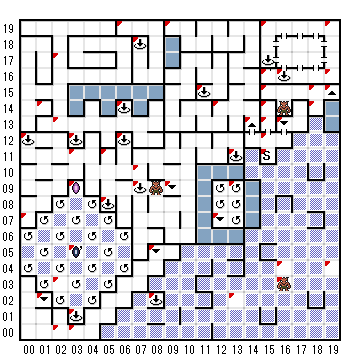

【 x：0，y：12 】
３F（13,11）
【 x：0，y：7 】
２F（8,11）から
【 x：1，y：14 】
LV1しか呼べないペンタグラム
【 x：1，y：2 】
B3F（16,10）へ
【 x：2，y：17 】
B2F(11,15)から
【 x：2，y：13 】
出口はこちら←←←←←←←
【 x：2，y：3 】
LV3の魔物しか呼べないペンタグラム
【 x：2，y：0 】
出口はこちら↑↑↑↑↑↑↑
【 x：3，y：12 】
B3F(14,8)へ
【 x：3，y：11 】
出口はこちら←←←←←←←
【 x：3，y：9 】
B2F（1,4）へ
【 x：3，y：5 】
(1)
B３F（3,16）から
(2)
B３F（14,6）から
(3)
B３F（12,15）から
【 x：3，y：1 】
B3F（13,11）へ
【 x：3，y：0 】
B3F（10,2）から
【 x：5，y：11 】
LV２しか呼べないペンタグラム
【 x：5，y：8 】
B２F（12,19）へ
【 x：6，y：19 】
(1)
３F（14,19）から
(2)
３F（19,16）から
【 x：6，y：14 】
B2F（12,19）へ
【 x：6，y：12 】
２F（12,19へ）
【 x：7，y：18 】
３F（14,8）へ
【 x：7，y：10 】
出口はこちら→→→→→
【 x：7，y：9 】
３F（13,11）へ
【 x：8，y：5 】
B3F（3,8）へ
【 x：8，y：2 】
B2F(16,19)へ
【 x：9，y：19 】
２F（1,16）から
【 x：9，y：9 】
B3F(11,5)へ
【 x：11，y：15 】
３F（13,11）
【 x：12，y：14 】
出口はこちら←←←←←
【 x：12，y：7 】
３F（16．10）
【 x：13，y：11 】
３F（14,8）へ
【 x：13，y：9 】
２F（14,8）から
【 x：13，y：2 】
”ねえ旦那！ちょっと・・・いいもんがありまっせ！
ほらお買い得ですよ！たったの100GP”
”いいもん”を買う（Y/N）?
君はHOLY RELIQUARYを手に入れた
【 x：14，y：13 】
B1Fの19,19へ
【 x：15，y：19 】
出口はこちら←←←←
【 x：15，y：16 】
城への出口
【 x：15，y：15 】
出口→→→→→→
【 x：15，y：14 】
３F（19,15）へ
【 x：15，y：13 】
よく言うじゃない
”最初の一歩が一番大変”
自分の行く先に気をつけないと、
一生さまようことになるぞ！
【 x：15，y：12 】
点滅するサインが目の前に浮かんでいる
ようこそ！コズミックキューブへ！
一生遊んでても飽きないおもしろさ！
（簡単には返しませんよ！）
おなじみの謎々だよ！ 虎か？
それともご婦人か？ キューブから
出るなら、こいつを解かなキャ！
君の前にはドアが三つ
左のドアにはこう書いてある。
右の部屋には虎がいる
真ん中のドアにはこう書いてある。
虎はこの中いる
右のドアにはこう書いてある。
ご婦人はこの部屋の中
空いてる部屋はありません。
ホントのことを書いたドアは一つ
だけ。よ〜く考えて、さあご婦人は
どこ？ ご婦人選べば 黄金の道、
違うドアならキューブをお散歩！
【 x：15，y：11 】
S
【 x：16，y：16 】
３F（14,8）へ
【 x：16，y：13 】
B2FのE1 N14 へ
【 x：16，y：4 】
出口はこちら↑↑↑↑↑↑↑
【 x：16，y：3 】
３F（19,17）から
【 x：18，y：15 】
出口はこちら
???????
【 x：18，y：14 】
B2F（8,2）から
【 x：19，y：19 】
(1)
１F（18,18）より
(2)
３F（16,2）からも
【 x：19，y：16 】
出口はこちら→
【 x：19，y：15 】
B1f(15,11)へ
【 x：19，y：4 】
LV4の魔物しか呼べないペンタグラム